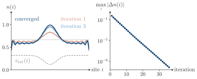
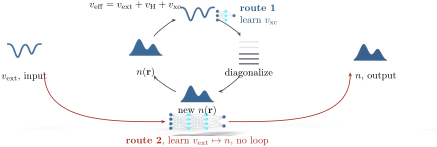

Advanced Quantum Materials 2027 · All lectures · Lecture notes
Session 10. Machine Learning Quantum Materials
10.5 Machine learning in density functional theory
We now turn to a different problem, and to a much older method of condensed matter, which is density functional theory (DFT). The motivation is the same as in Section 10.3, but now for real materials instead of lattice models. Let us take the Hamiltonian of a material,
\[H = \sum_i \left(-\frac{\hbar^2\nabla_i^2}{2m}\right) + \sum_i v_{\rm ext}(\mathbf{r}_i) + \frac{1}{2}\sum_{i\neq j} \frac{e^2}{|\mathbf{r}_i - \mathbf{r}_j|},\]
with \(v_{\rm ext}\) the potential of the nuclei. For a realistic number of electrons, it is not possible to obtain the many-body ground state \(\psi_0(\mathbf{r}_1,\dots,\mathbf{r}_N)\) directly. DFT avoids this problem by asking a smaller question. It does not ask for the full wavefunction, but for the ground-state electronic density \(n(\mathbf{r}) = N\int |\psi_0|^2\, d^3r_2\cdots d^3r_N\), which has a much lower dimension.
The Hohenberg-Kohn theorem is what makes this approach exact and not only convenient. For a given external potential \(v_{\rm ext}(\mathbf{r})\), the ground-state density \(n(\mathbf{r})\) determines \(v_{\rm ext}(\mathbf{r})\) uniquely, up to an additive constant, and therefore it determines the full Hamiltonian and the full many-body wavefunction. The arrow \(\psi_0 \to n\) is trivial, since it is an integral. The arrow \(n \to \psi_0\) is the nontrivial content of the theorem, and the theorem says that this arrow is guaranteed to exist. As a result, the ground-state energy is a functional of the density alone,
\[E[n] = F[n] + \int d^3r\, v_{\rm ext}(\mathbf{r})\, n(\mathbf{r}), \tag{10.7}\]
where \(F[n] = T[n] + V_{ee}[n]\) is a universal functional, meaning that it is the same for every system and does not depend on \(v_{\rm ext}\), and nobody knows its exact mathematical form.
The Kohn-Sham construction makes (10.7) useful in practice. We introduce a fictitious system of non-interacting electrons, which is chosen so that it has the same density \(n(\mathbf{r})\) as the real interacting system, and which is described by an effective single-particle Hamiltonian
\[H_{\rm KS} = -\frac{\hbar^2\nabla^2}{2m} + v_{\rm eff}(\mathbf{r}), \qquad v_{\rm eff}(\mathbf{r}) = v_{\rm ext}(\mathbf{r}) + \underbrace{e^2\!\int\! d^3r'\, \frac{n(\mathbf{r}')}{|\mathbf{r}-\mathbf{r}'|}}_{\text{Hartree (mean-field) term}} + \underbrace{\frac{\delta E_{\rm xc}[n]}{\delta n(\mathbf{r})}}_{v_{\rm xc}(\mathbf{r})}. \tag{10.8}\]
The first part of \(v_{\rm eff}\) is the external potential of the nuclei. The second part, the Hartree term, is a mean-field decoupling of the interaction, with the same structure as the mean-field theory of Section 1.12. Here it is applied to the Coulomb interaction instead of a Hubbard term on a lattice. The last part, the exchange-correlation potential \(v_{\rm xc}\), is defined so that it contains everything that the mean-field approximation misses, and it is as unknown as \(F[n]\) was. In practice one uses an approximation for \(E_{\rm xc}[n]\), such as LDA, GGA, meta-GGA and further refinements, and solves (10.8) self-consistently. We start from a guess for the density, build \(H_{\rm KS}\) and diagonalize it to obtain the Kohn-Sham orbitals. Then we compute the density again from these orbitals, and we repeat until convergence.

There are two different places where machine learning can enter this loop. We keep them separate, because they solve different problems.
Learning the functional itself. We replace or improve the LDA, GGA or meta-GGA approximation to \(E_{\rm xc}[n]\), or to its functional derivative \(v_{\rm xc}\), with a neural network. The network is trained to reproduce reference calculations with a higher accuracy. This can improve the accuracy, but it does not remove the self-consistency loop. We still have to diagonalize \(H_{\rm KS}\) at every iteration, and this remains the expensive step for large systems, independently of how good \(v_{\rm xc}\) is.
Learning the whole map. A more ambitious use of the Hohenberg-Kohn theorem is to remove the self-consistency loop completely. We train a neural network to map the atomic positions, or equivalently \(v_{\rm ext}(\mathbf{r})\), directly to the ground-state density \(n(\mathbf{r})\), with no diagonalization at all when the network is used. This is the idea behind machine-learned density functionals, which are related to the machine learning interatomic potentials that map atomic positions to energies and forces, an established technique in quantum chemistry and condensed matter. We train the network on conventional Kohn-Sham calculations for small systems that we can solve, and then we apply it to much larger systems, where a direct Kohn-Sham calculation would be too expensive.
The Hohenberg-Kohn reduction is very asymmetric. Going from the many-body ground state to the density is a \(3N\to3\) integral that anyone can do, while going back is guaranteed to be possible but has no formula. This missing formula is where machine learning can enter. Figure 10.4 places both routes on the self-consistency loop, which is the fastest way to see why only the second one changes which systems we can compute.

A network is trained to give the exchange-correlation potential \(v_{\rm xc}\) with high accuracy, and it is used inside the Kohn-Sham loop. Does this change the largest system that we can compute?
Show the answers
- A. ✗ False
This is false. The Kohn-Sham Hamiltonian \(-\nabla^2/2+v_{\rm ext}+v_H+v_{\rm xc}\) is still a matrix. We need its orbitals to build the density, so the diagonalization stays.
- B. ✓ True
This is true. Diagonalization costs about \(N^3\), and a local \(v_{\rm xc}(n)\) costs only about \(N\) per evaluation. For \(N=1000\) orbitals this is \(10^9\) against \(10^3\), so a better \(v_{\rm xc}\) does not change the limit.
- C. ✗ False
This is false. In LDA the \(v_{\rm xc}\) is a function of the local density, and its cost is small compared with the diagonalization. A network does not make this part larger or the limit different.
In the Hohenberg-Kohn theorem, which of the two arrows is a simple integral?
Show the answers
- A. ✓ True
This is true. The density is \(n(\mathbf r)=N\int|\psi_0|^2\) over \(N-1\) coordinates, which is an integral. The reverse needs one to solve for \(\psi_0\) in \(3N\) dimensions with no formula.
- B. ✗ False
This is false. For one electron \(\psi_0=\sqrt n\) up to a phase, but already for \(N=2\) no formula exists. The theorem says that \(\psi_0\) is unique, and it does not say how to find it.
- C. ✗ False
This is false. An integral loses information, and many functions give the same density. The state \(\psi\) and \(\psi e^{i\phi(\mathbf r_1,\mathbf r_2)}\) have the same \(n\), so one cannot invert it by integration.
DFT calculations were never part of the numerical tools of this course, since pyqula is a tight-binding and mean-field library and not a DFT code. So this part has no notebook counterpart, and the derivation above is complete.